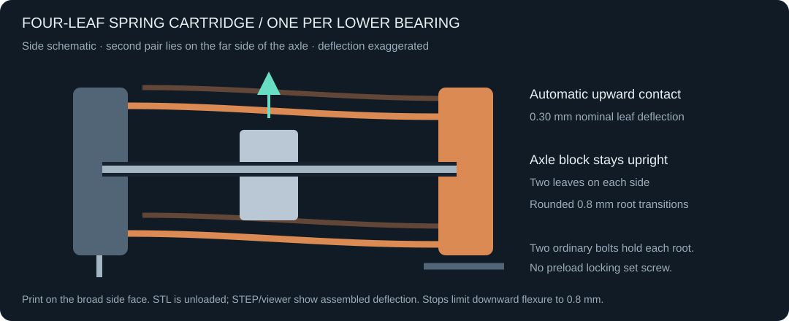
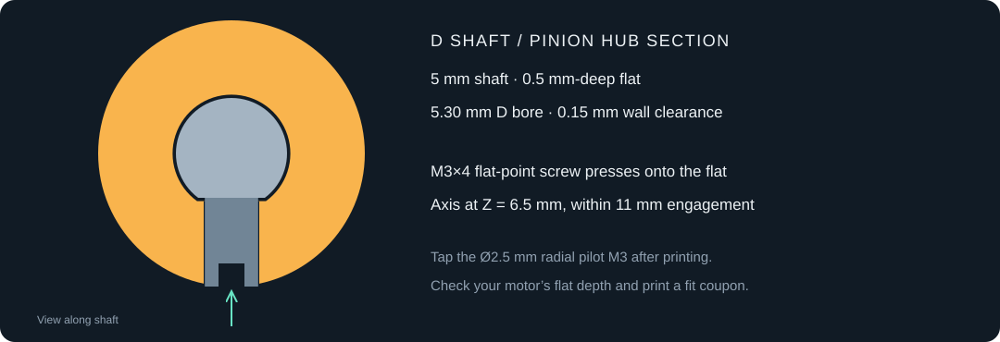

Small footprint.
Compliant by design.
A NEMA17 actuator with four angled 625ZZ rollers, two spring-loaded lower rollers, and a stiff beveled rack. Configurable 40 mm stroke and oversized flexure teeth. Explore the actual CadQuery geometry.
Give each tooth
a little room to flex.
Each uncapped rack tooth has two rooted 0.60 mm walls. Open central slots and cutouts between the tooth roots extend 4.5 mm behind the tooth roots. Their ends are smooth semicircles tangent to the slot walls, so the bending roots have no square-ended cutouts. The internal fingers have been removed. A 0.10 mm oversize per flank at the pitch line provides the initial preload target. This adapts the spring-wall principle from seveibar’s compliant spur gear ↗ to a linear rack.
Four 625ZZ rollers contact the rack’s two 45° upper faces. Their radial reactions point downward and inward. Two lower 625ZZ rollers support a flat underside, with their contact centers staggered by ±1 mm across it to resist rocking. The stations are spaced 46 mm along the stroke, and the deeper guide is joined to a wider, continuous tooth backbone. Two replaceable four-leaf cartridges push the lower bearings upward automatically. Each axle block has spring leaves on both sides at two heights and is deflected 0.30 mm when assembled. Two ordinary through-bolts hold each fixed root; there is no eccentric or preload locking screw. A lead-in ramp depresses the bearings as the rack slides in, and chassis stops limit downward flexure to 0.8 mm. The rack still slides in from the output side with the motor free to turn.
Preload is a design target. Backlash, stiffness and fatigue are not yet measured.Built around real constraints
- Drive
- NEMA17, 42 × 42 × 23 mm reference motor
5 mm D shaft · 0.5 mm-deep flat
31 mm mounting pitch
Integral 5 mm motor mounting land - Shaft fit
- Ø5.30 mm D bore · 0.15 mm wall clearance
M3×4 flat-point set screw normal to flat
Tap Ø2.5 mm pilot M3 at Z=6.5 mm - Rack
- 112 mm guide length + 14 mm output pad
18 mm pad thickness · flush print face
0.60 mm walls · 8 mm tooth face
Round reliefs: R1.981 / R0.561 mm
0.20 mm total pitch-line oversize - Guidance
- 6 × 625ZZ, 5 × 16 × 5 mm
Four at 45° above, two below
46 mm station spacing · passive leaf preload - Mounting
- Four Ø4.4 mm chassis holes, 60 × 67 mm pattern
Recessed head seats
Two Ø3.4 mm output holes, 9 mm pitch - Envelope
- 126 × 81 × 52 mm at center
166 mm total swept length at 40 mm stroke - Travel
- 113.10 mm per motor revolution
0.565 mm per full step at 200 steps/rev


Resolution table
For a 1.8° motor (200 full steps/revolution) directly driving the 18-tooth, module-2 pinion. Its 36 mm pitch diameter gives 113.097336 mm of rack travel per revolution.
Travel per command = π × 36 mm ÷ (200 × microstep factor)
| Drive setting | Commands / rev | mm / command | µm / command | Commands / mm |
|---|---|---|---|---|
| Full step | 200 | 0.565487 | 565.487 | 1.76839 |
| Half step (1/2) | 400 | 0.282743 | 282.743 | 3.53678 |
| 1/4 step | 800 | 0.141372 | 141.372 | 7.07355 |
| 1/8 step | 1,600 | 0.070686 | 70.686 | 14.14711 |
| 1/16 step | 3,200 | 0.035343 | 35.343 | 28.29421 |
These are commanded increments, not measured positioning accuracy or guaranteed physical movement per microstep. Load, driver current regulation, motor torque, printed tooth compliance and backlash affect actual motion. Verify your motor's full-step angle; a 0.9° motor halves these increments.
A sequence, not a scatter.
The rack slides through the fixed guides while the pinion turns. For full service, remove the pinion, withdraw the angled axles and lift the upper bearings. After the motor and angled axle nuts are removed, unbolt and slide out the complete lower-bearing cartridges. Their axle nuts, bolts and bearings then separate outside the chassis. The viewer and CAD checks use the same translation and rotation tracks.
Staged removal
Normal rack installation needs no chassis disassembly. The later animation stages show bearing, pinion and motor service. The bearing platform and 5 mm motor mounting land are one printed chassis.
Prototype honestly
Every rigid part pair is checked at rest, including the recessed platform and underside fasteners. Moving pairs are sampled at intervals of at most 0.5 mm, including the rotating pinion. Only the intentional elastic tooth contact is allowed during disengagement; there are no blanket subassembly exclusions. The nominal tooth profile is checked separately without preload.
Printing, fasteners & commissioning
Printing
The deeper chassis needs support beneath the motor-platform overhang and in horizontal bores; keep supports off bearing seats. Print each spring cartridge with its broad side face on the bed, so the leaf length and bending direction lie within the layer plane. Check the upper-leaf bridges and axle collars in the slicer; keep any supports clear of the leaf gaps. The STL is the relaxed shape; the STEP/viewer show the assembled deflection. Start with PETG or PA and test a carrier before committing to a long run; printed springs can creep. Dry-fit the guide before final assembly. Clear and gauge the through-holes and underside hex nut pockets after printing. Print the rack with its broad tooth face on the bed. The output pad now shares that same flat face, so the shown pad area needs no supports in this orientation. Rack teeth are fine features: start with PETG/PA and a 0.25 mm nozzle, or qualified resin. The open slots remove the overhanging fingers. Print a root-relief sample first to confirm the walls, gaps and smooth circular relief ends remain clear. Keep raceways clear of debris; clamp the inner races only.
Hardware
6 × 625ZZ; 4 × M5×16 upper axle screws; 2 × M5×25 lower axle screws; 6 × thin M5 jam nuts (2.7 mm); 6 × 0.3 mm inner-race washers; 4 × M3×20 cartridge mounting bolts and 4 × M3 nuts; 4 × M3×12 countersunk motor screws; M3×4 flat-point pinion set screw; application-specific M4 button-head mounting screws (head Ø7.6 mm maximum, 2.2 mm high). Mounting holes are at X=±30, Y=−13/54 mm. Tap the pinion’s Ø2.5 mm radial pilot M3. Verify hardware dimensions against the CAD.
Commissioning
Test the beveled guide with a short printed coupon. Mount each relaxed spring cartridge with its two through-bolts and captive nuts and clamp each bearing inner race with its M5 axle. Slide the rack in gently over its lead-in ramp. The leaves should flex downward slightly, then keep all six rollers turning across the full stroke. Do not force insertion or bend past the stops. Spring force and long-term creep require a physical test; change source parameters or reprint the carrier if preload is unsuitable. Insert from the output/right side with the pinion free to turn. Use controller travel limits; the insertion end is intentionally open. The D bore assumes a 5 mm shaft with a 0.5 mm-deep flat; verify your motor drawing. Tighten the set screw onto the flat, then check free motion by hand before powering. Set travel limits in your controller. External driver, wiring and limit switches are not included in the mechanical model.
Design limitations
No rated force, life, accuracy or thermal specification. Tooth-wall deflection, preload and roller fit need a physical test. NEMA17 dimensions vary; verify the motor drawing. Longer-stroke variants need their own geometry checks.
From viewer to workbench.
Editable CadQuery source, exact STEP assembly, printable meshes and the check report.